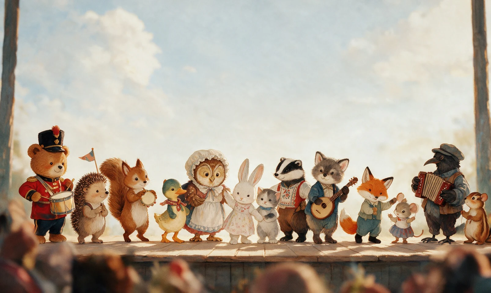
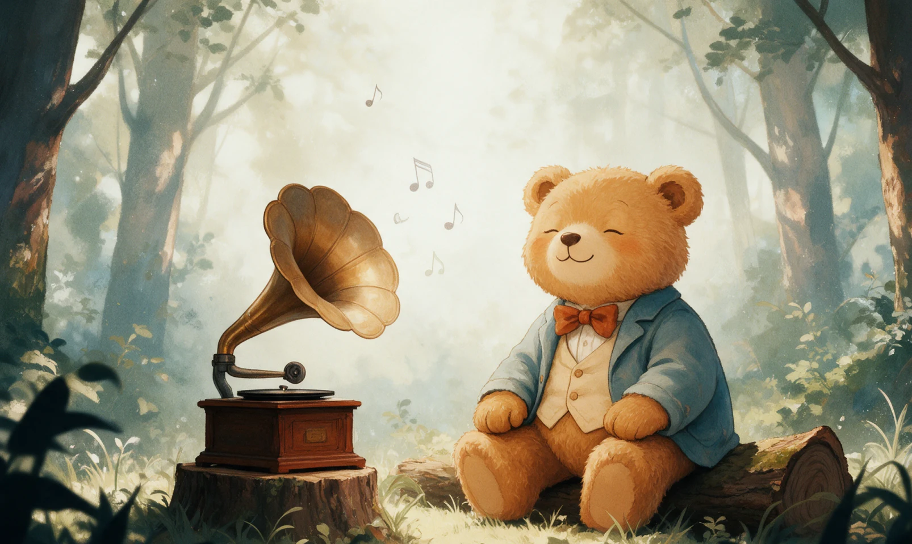
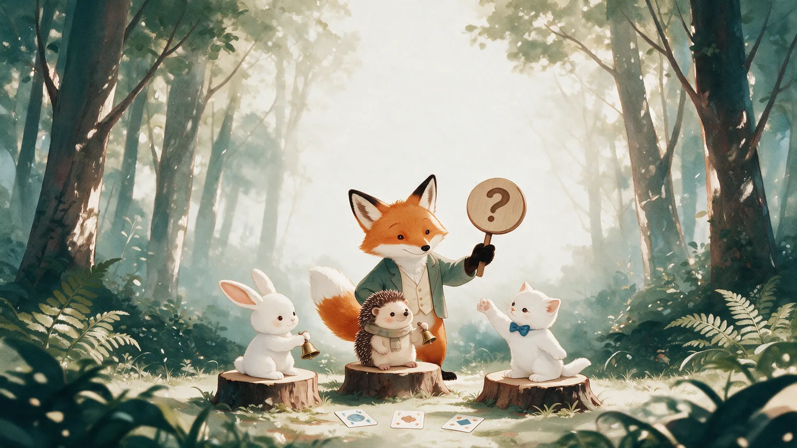
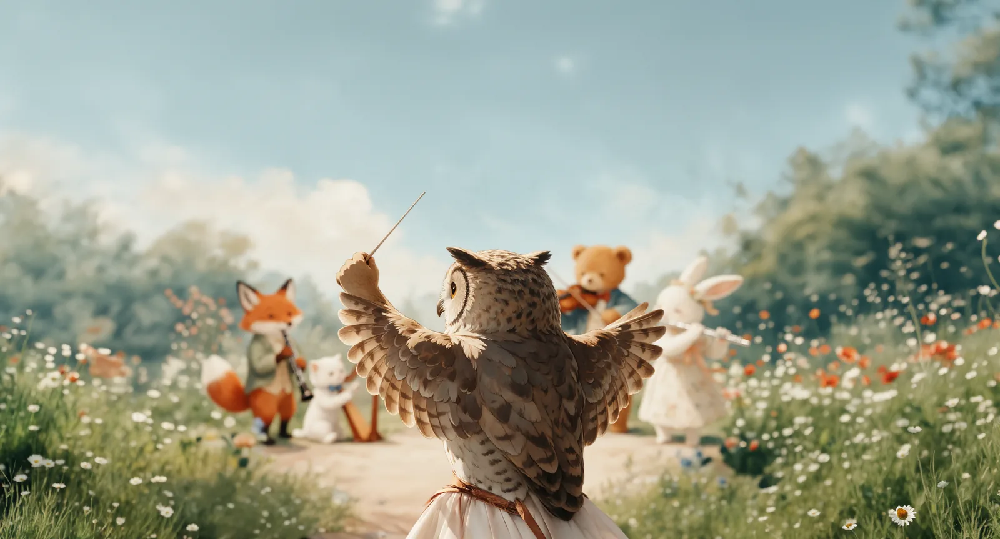

Выбор игры

Танцевальная полянка
Смотри видео и танцуй вместе со зверятами под музыку Петра Ильича Чайковского

УгаДай меЛоДию
Слушай и угадывай произведения из «Детского альбома» Петра Ильича Чайковского

ВиКтоРиНа
Проверь свои знания и открой новые факты о жизни и творчестве Петра Ильича Чайковского

Оркестровая яма
Слушай инструменты и отгадывай их. Найдёшь все, и для тебя заиграет целый оркестр!